This chapter presents some features of Chebfun that are less robust than what is described in the first eight chapters. With classic bounded chebfuns on a bounded interval $[a,b]$, you can do amazingly complicated things often without encountering any difficulties. Now we are going to let the intervals and the functions diverge to infinity -- but please lower your expectations! These features are not always as accurate or reliable.
9.1 Infinite intervals
If a function converges reasonably rapidly to a constant at $\infty$, you can define a corresponding chebfun. Here are a couple of examples on $[0,\infty]$. First we plot a function and find its maximum:
f = chebfun('0.75 + sin(10*x)./exp(x)',[0 inf]);
LW = 'linewidth'; MS = 'markersize';
plot(f,LW,1.6)
maxf = max(f)
maxf = 1.608912750768336
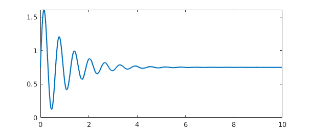
Next we plot another function and integrate it from $0$ to $\infty$:
g = chebfun('1./(gamma(x+1))',[0 inf]);
sumg = sum(g)
plot(g,'r',LW,1.6)
sumg = 2.266534507699834
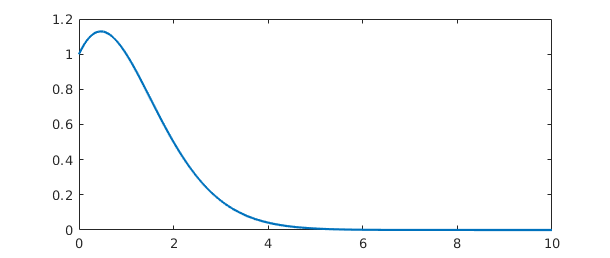
Where do $f$ and $g$ intersect? We can find out using roots:
plot(f,'b',g,'r',LW,1.2), hold on r = roots(f-g) plot(r,f(r),'.k',MS,18)
r = 0.027639744894514 0.265714132607450 0.706922132176979 0.862331877000826 1.297442594652156 1.594466987072374 1.781855556974645
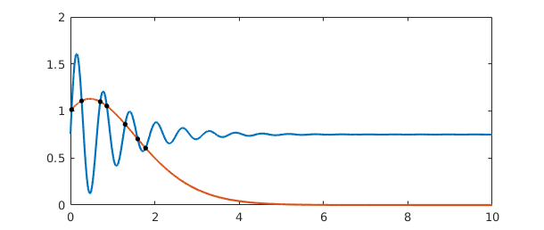
Here's an example on $(-\infty,\infty)$ with a calculation of the location and value of the minimum:
g = chebfun(@(x) tanh(x-1),[-inf inf]); g = abs(g-1/3); clf, plot(g,LW,1.6) [minval,minpos] = min(g)
minval =
0
minpos =
1.346573590279973
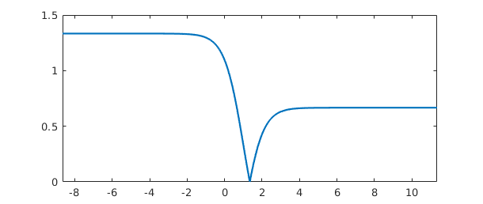
Notice that a function on an infinite domain is by default plotted on an interval like $[0,10]$ or $[-10,10]$. You can use an extra 'interval' flag to plot on other intervals, as shown by this example of a function of small norm whose largest values are near $x=30$:
hh = @(x) cos(x)./(1e5+(x-30).^6); h = chebfun(hh,[0 inf]); plot(h,LW,1.6,'interval',[0 100]) normh = norm(h)
normh =
2.441961683577727e-05
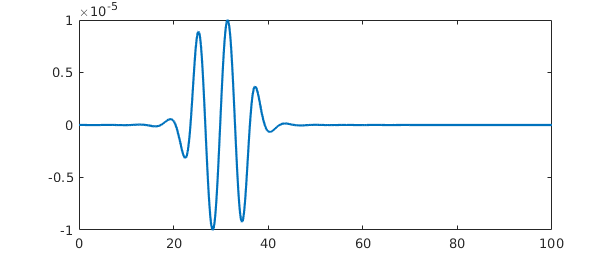
Chebfun provides a convenient tool for the numerical evaluation of integrals over infinite domains:
g = chebfun('(2/sqrt(pi))*exp(-x.^2)',[0 inf]);
sumg = sum(g)
sumg = 0.999999999999991
The cumsum operator applied to this integrand gives us the error function, which matches the MATLAB erf function reasonably well:
errorfun = cumsum(g)
disp(' erf errorfun')
for n = 1:6, disp([erf(n) errorfun(n)]), end
errorfun =
chebfun column (1 smooth piece)
interval length endpoint values
[ 0, Inf] 97 0 1
Epslevel = 2.220446e-16. Vscale = 1.000000e+00.
erf errorfun
0.842700792949715 0.842700792948944
0.995322265018953 0.995322265017458
0.999977909503001 0.999977909500824
0.999999984582742 0.999999984579919
0.999999999998463 0.999999999995027
1.000000000000000 0.999999999995981
One should be cautious in evaluating integrals over infinite intervals, however, for as mentioned in Section 1.5, the accuracy is sometimes disappointing, especially for functions that do not decay very quickly:
sum(chebfun('(1/pi)./(1+s.^2)',[-inf inf]))
ans = 0.999999999998234
Here's an example of a function whose wiggles decay too slowly to be fully resolved:
sinc = chebfun('sin(pi*x)./(pi*x)',[-inf inf]);
plot(sinc,'m',LW,1.6,'interval',[-10 10])
Warning: Function not resolved using 65537 pts. Have you tried 'splitting on'?
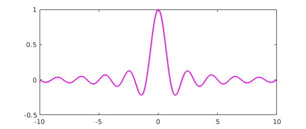
Chebfun's capability of handling infinite intervals was introduced by Rodrigo Platte in 2008-09. The details of the implementation then changed considerably with the introduction of version 5 in 2014.
The use of mappings to transform an unbounded domain to a bounded one is an idea that has been employed many times over the years. One of the references we have benefitted especially from, which also contains pointers to other works in this area, is the book [Boyd 2001].
9.2 Poles
Chebfun can handle certain "vertical" as well as "horizontal" infinities -- especially, functions that blow up according to an integer power, i.e., with a pole. If you know the nature of the blowup, it is a good idea to specify it using the 'exps' flag. For example, here's a function with a simple pole at $0$. We use 'exps' to tell the constructor that the function looks like $x^{-1}$ at the left endpoint and $x^0$ (i.e., smooth) at the right endpoint.
f = chebfun('sin(50*x) + 1./x',[0 4],'exps',[-1,0]);
plot(f,LW,1.6), ylim([-5 30])
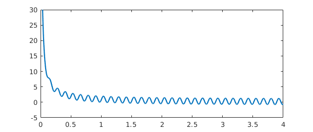
Here's the same function but over a domain that contains the singularity in the middle. We tell the constructor where the pole is and what the singularity looks like:
f = chebfun('sin(50*x) + 1./x',[-2 0 4],'exps',[0,-1,0]);
plot(f,LW,1.6), ylim([-30 30])
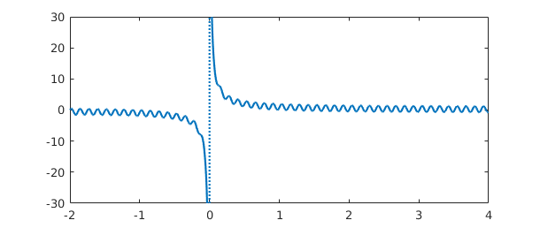
Here's the tangent function:
f = chebfun('tan(x)', pi*((-5/2):(5/2)), 'exps', -ones(1,6));
plot(f,LW,1.6), ylim([-5 5])
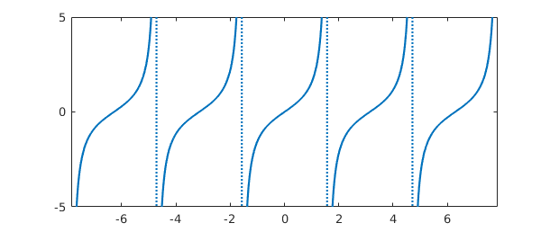
Rootfinding works as expected:
x2 = chebfun('x/2',pi*(5/2)*[-1 1]);
hold on, plot(x2,'k',LW,1.6)
r = roots(f-x2,'nojump'); plot(r,x2(r),'or',LW,1.6,'markersize',8)
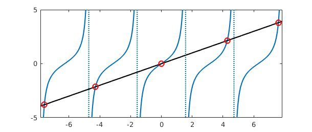
And we can manipulate the function in various other familiar ways:
g = sin(2*x2)+min(abs(f+2),6); hold off, plot(g,LW,1.6)
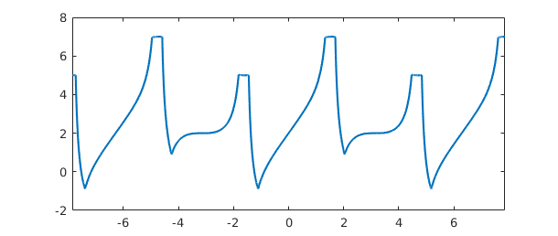
If you don't know what singularities your function may have, Chebfun has some ability to find them if the flags 'blowup' and 'splitting' are on:
gam = chebfun('gamma(x)',[-4 4],'splitting','on','blowup',1);
plot(gam,LW,1.6), ylim([-10 10])
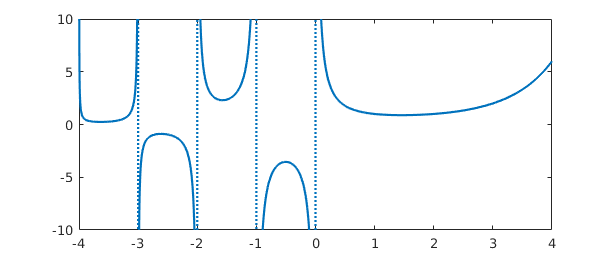
But it's always better to specify the breakpoints and powers if you know them:
gam = chebfun('gamma(x)',[-4:0 4],'exps',[-1 -1 -1 -1 -1 0]);
It's also possible to have poles of different strengths on two sides of a singularity. In this case, you specify two exponents at each internal breakpoint rather than one:
f = chebfun(@(x) cos(100*x)+sin(x).^(-2+sign(x)),[-1 0 1],'exps',[0 -3 -1 0]); plot(f,LW,1.6), ylim([-30 30])
9.3 Singularities other than poles
Less reliable but also sometimes useful is the possibility of working with functions with algebraic singularities that are not poles. Here's a function with inverse square root singularities at each end:
w = chebfun('(2/pi)./(sqrt(1-x.^2))','exps',[-.5 -.5]);
plot(w,'m',LW,1.6), ylim([0 10])
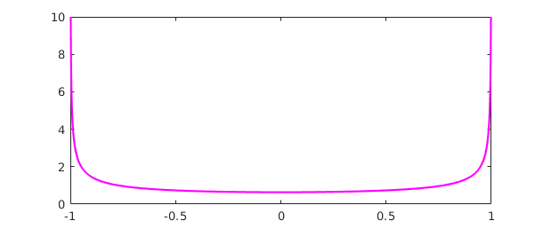
The integral is $2$:
sum(w)
ans = 2.000000000000000
We pick this example because Chebyshev polynomials are the orthogonal polynomials with respect to this weight function, and Chebyshev coefficients are defined by inner products against Chebyshev polynomials with respect to this weight. For example, here we compute inner products of $x^4 + x^5$ against the Chebyshev polynomials $T_0,\dots,T_5$. (The integrals in these inner products are calculated by Gauss-Jacobi quadrature using methods due to Hale and Townsend; for more on this subject see the command jacpts.)
x = chebfun('x');
T = chebpoly(0:5)';
f = x.^4 + x.^5;
chebcoeffs1 = T*(w.*f)
chebcoeffs1 = 0.750000000000000 0.625000000000000 0.500000000000000 0.312500000000000 0.125000000000000 0.062500000000000
Here for comparison are the Chebyshev coefficients as obtained from chebcoeffs:
chebcoeffs2 = flipud(chebcoeffs(f)')
chebcoeffs2 = 0.375000000000000 0.625000000000000 0.500000000000000 0.312500000000000 0.125000000000000 0.062500000000000
Notice the excellent agreement except for coefficient $a_0$. As mentioned in Section 4.1, in this special case the result from the inner product must be multiplied by $1/2$.
You can specify singularities for functions that don't blow up, too. For example, suppose we want to work with $(x\exp(x))^{1/2}$ on the interval $[0,2]$. A first try fails completely:
ff = @(x) sqrt(x.*exp(x)); d = [0,2]; f = chebfun(ff,d)
Warning: Function not resolved using 65537 pts. Have you tried 'splitting on'?
f =
chebfun column (1 smooth piece)
interval length endpoint values
[ 0, 2] 65537 3.6e-15 3.8
Epslevel = 6.814598e-11. Vscale = 3.844231e+00.
We could turn splitting on and resolve the function by many pieces, as illustrated in Section 8.3:
f = chebfun(ff,d,'splitting','on')
f =
chebfun column (6 smooth pieces)
interval length endpoint values
[ 0, 2e-10] 43 1.2e-07 1.4e-05
[ 2e-10, 2e-08] 62 1.4e-05 0.00014
[ 2e-08, 2e-06] 91 0.00014 0.0014
[ 2e-06, 0.0002] 111 0.0014 0.014
[ 0.0002, 0.02] 122 0.014 0.14
[ 0.02, 2] 84 0.14 3.8
Epslevel = 4.572597e-10. Vscale = 3.844231e+00. Total length = 513.
A better representation, however, is constructed if we tell Chebfun about the singularity at $x=0$:
f = chebfun(ff,d,'exps',[.5 0]) plot(f,LW,1.6)
f =
chebfun column (1 smooth piece)
interval length endpoint values endpoint exponents
[ 0, 2] 12 0 3.8 [0.5 0]
Epslevel = 1.000000e-14. Vscale = 3.844231e+00.
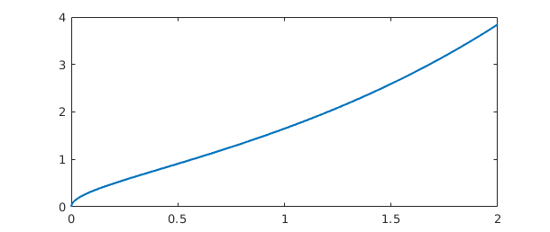
Under certain circumstances Chebfun will introduce singularities like this of its own accord. For example, just as abs(f) introduces breakpoints at roots of f, sqrt(abs(f)) introduces breakpoints and also singularities at such roots:
theta = chebfun('t',[0,4*pi]);
f = sqrt(abs(sin(theta)))
plot(f,LW,1.6)
sumf = sum(f)
f =
chebfun column (4 smooth pieces)
interval length endpoint values endpoint exponents
[ 0, 3.1] 19 0 0 [0.5 0.5]
[ 3.1, 6.3] 25 0 0 [0.5 0.5]
[ 6.3, 9.4] 17 0 0 [0.5 0.5]
[ 9.4, 13] 17 0 0 [0.5 0.5]
Epslevel = 1.408355e-15. Vscale = 1.000000e+00. Total length = 78.
sumf =
9.585121877884726
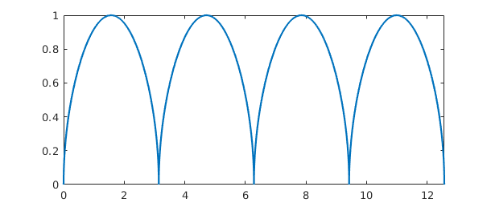
If you have a function that blows up but you don't know the nature of the singularities, even whether they are poles or not, Chebfun will try to figure them out automatically if you run in 'blowup 2' mode. Here's an example
f = chebfun('x.*(1+x).^(-exp(1)).*(1-x).^(-pi)','blowup',2)
f =
chebfun column (1 smooth piece)
interval length endpoint values endpoint exponents
[ -1, 1] 30 -Inf Inf [-2.7 -3.1]
Epslevel = 1.000000e-14. Vscale = Inf.
Notice that the 'exps' field shows values close to $-e$ and $-\pi$, as is confirmed by looking at the numbers to higher precision:
get(f, 'exps')
ans = -2.718281828460000 -3.141592653590000
The treatment of blowups in Chebfun was initiated by Mark Richardson in an MSc thesis at Oxford [Richardson 2009], then further developed by Richardson in collaboration with Rodrigo Platte and Nick Hale.
9.4 Another approach to singularities
Chebfun version 4 offered an alternative singmap approach to singularities based on mappings of the $x$ variable. This is no longer available in version 5.
9.5 References
[Boyd 2001] J. P. Boyd, Chebyshev and Fourier Spectral Methods, 2nd ed., Dover, 2001.
[Richardson 2009] M. Richardson, Approximating Divergent Functions in the Chebfun System, thesis, MSc in Mathematical Modelling and Scientific Computing, Oxford University, 2009.